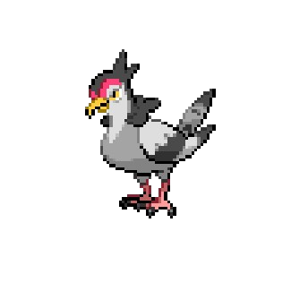

Tranquill rests on the railing, keeping an eye on travelers crossing toward Castelia.

Ducklett waddles along the deck.
Welcome to Skyarrow Bridge! Enjoy the view as you make your way to Castelia City!
A Tranquill and a Ducklett have stopped on the bridge to rest. Both are flying Pokemon found in Unova. You should consider catching one before taking on the Castelia City Gym!

Tranquill rests on the railing, keeping an eye on travelers crossing toward Castelia.
Ducklett waddles along the deck.